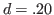

Next: 日本教育心理学会（2017） Up: 学会の記録 Previous: 学会の記録
今現在，3つの公募型効果研究が行われている。
Eysenck (1952) 神経症患者の折衷的治療による治癒率と自然寛解率の比較
Smith & Glass (1977) ，行動療法と非行動療法の効果の違い（ ）
「ドードー鳥評定」すべての心理療法に共通する要因があり，それがクライアントの変化の約85%はそれによる。
交互作用の検証（Beutler），適性処遇交互作用（Cooper, 2008）
「誰によるどの治療法が，どういった状況下のある特定の問題を持ったこの特性を持つ個人に有効か」
原田 (2015) によると，心理臨床研究では事例研究が中心，Journal of Consulting and Counseling Psychology ではRCTが中心となっている。
CiNii：認知行動療法CBTではRCTが17件あるが，来談者中心療法や力動的精神療法ではゼロ
APA (2006) 患者の特性，文化，好みに照らし合わせて，活用できる最善の研究成果を臨床技能と統合
 エビデンスをクライエント一人ひとりに合わせて用いること
エビデンスをクライエント一人ひとりに合わせて用いること
岩壁 (2013) ：科学的，系統的な手法を事例研究に導入する必要性の提案
事例研究を通じて，科学的知見が特定の事例にどのように活用されるのか検証する。（事例研究の意義）
Roth & Fonagy (2005) "What works for whom?"
Wyssman & Cuijpers (2017) Harvard Review of Psychiatry
NATURE EDITORIAL (2012, September) Studies to enhance psychological treatments are scandalously under-supported.
イギリス NHS 2008- IAPT 心理療法アクセス改善政策 Layard, R., & Clark, D. M. 「心理療法がひらく未来」
Cuijper (2017) うつ病に対する心理療法のRCT報告数の劇的増加（過去40年）
Engel (1977) 生物-社会-心理モデル
実証に基づく心理的介入（APA, 1995, 1998; Nathan & Gorman, 2006; Ross & Fonagy, 2005） APAでは2016年現在82種類の効果研究の分類が挙げられている。
※ケースフォーミュレーション（学派を超えた基盤）
中村雄二郎
Shedler, J. (2010, 2013) 深層心理学的アプローチにおける効果研究のレビュー（長期的効果の発見） "Evidence for the effectiveness of Jungian psychotherapy: A review of empirical studies."
心理臨床の「ゴール」をどう考えるか，何を持って「効果」と考えるのか，いつの時点での「効果」をみるのか，「効果」の個人差をどのように組み込むか
ロールプレイを用いた条件統制，プロセスの比較（心理療法 vs. 悩み相談 vs. 認知行動療法）発話の分類（黙っている時間が非常に多い），身体の共鳴現象
著書「カウンセリングで何が起こっているのか」
Taichi Okumura